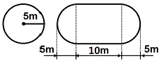

위험물기능사 (2010-03-28 기출문제)
1과목: 화재 예방과 소화방법
1. 다음 위험물의 화재 시 소화방법으로 물을 사용하는 것이 적합하지 않은 것은?
- NaClO3
- P4
- Ca3P2
- S
(정답률: 54%)

2. 금속분, 나트륨, 코크스 같은 물질이 공기 중에서 점화원을 제공 받아 연소할 때의 주된 연소형태는?
- 표면연소
- 확산연소
- 분해연소
- 증발연소
(정답률: 74%)
3. 인화성액체 위험물에 대한 소화방법에 대한 설명으로 틀린 것은?
- 탄산수소염류 소화기는 적응성이 있다.
- 초소화기는 적응성이 있다.
- 이산화탄소소화기에 의한 질식소화가 효과적이다.
- 물통 또는 수조를 이용한 냉각소화가 효과적이다.
(정답률: 64%)
4. 그림과 같이 횡으로 설치한 원통형 위험물탱크에 대하여 탱크 용적을 구하면 약 몇 m3인가? (단, 공간용적은 탱크 내용적의 100분의 5로 한다.)

- 196.25
- 261.60
- 785.00
- 994.84
(정답률: 64%)
5. 이동저장탱크에 알킬알루미늄을 저장하는 경우에 불활성기체를 봉입하는데 이때의 압력은 몇 kPa 이하이어야 하는가?
- 10
- 20
- 30
- 40
(정답률: 54%)
6. 주유취급소 중 건축물의 2층에 휴게음식점의 용도로 사용하는 것에 있어 당해 건축물의 2층으로부터 직접 주유취급소의 부지 밖으로 통하는 출입구와 당해 출입구로 통하는 통로계단에 설치하여야 하는 것은?
- 비상경보설비
- 유도등
- 비상조명등
- 확성장치
(정답률: 91%)
7. 다음 중 위험물안전관리법에 따른 소화설비의 구분에서 “물분무등소화설비”에 속하지 않는 것은?
- 이산화탄소소화설비
- 포소화설비
- 스프링클러설비
- 분말소화설비
(정답률: 67%)
8. 아세톤의 물리·화학적 특성과 화재 예방 방법에 대한 설명으로 틀린 것은?
- 물에 잘 녹는다.
- 증기가 공기보다 가벼우므로 확산에 주의한다.
- 화재 발생 시 물 분무에 의한 소화가 가능하다.
- 휘발성이 있는 가연성 액체이다.
(정답률: 53%)
9. 화학포의 소화약제인 탄산수소나트륨 6몰이 반응하여 생성되는 이산화탄소는 표준상태에서 최대 몇 L인가?
- 22.4
- 44.8
- 89.6
- 134.4
(정답률: 48%)
10. 다음 중 연소에 필요한 산소의 공급원을 단절하는 것은?
- 제거작용
- 질식작용
- 희석작용
- 억제작용
(정답률: 77%)
11. 포소화제의 조건에 해당되지 않는 것은?
- 부착성이 있을 것
- 쉽게 분해하여 증발될 것
- 바람에 견디는 응집성을 가질 것
- 유동성이 있을 것
(정답률: 68%)
12. 다음 물질 중 분진폭발의 위험성이 가장 낮은 것은?
- 밀가루
- 알루미늄분말
- 모래
- 석탄
(정답률: 81%)
13. 옥외저장소에 덩어리 상태의 유황만을 지반면에 설치한 경계표시의 안쪽에서 저장할 경우 하나의 경계표시의 내부면적은 몇 ㎡ 이하 이어야 하는가?
- 75
- 100
- 300
- 500
(정답률: 64%)
14. 위험물제조소등에 설치하여야 하는 자동화재탐지설비의 설치기준에 대한 설명 중 틀린 것은?
- 자동화재탐지설비의 경계구역은 건축물 그 밖의 공작물의 2 이상의 층에 걸치도록 할 것
- 하나의 경계구역에서 그 한 변의 길이는 50m(광전식분리형 감지기를 설치할 경우에는 100m) 이하로 할 것
- 자동화재탐지설비의 감지기는 지붕 또는 벽의 옥내에 면한 부분에 유효하게 화재의 발생을 감지할 수 있도록 설치할 것
- 자동화재탐지설비에는 비상전원을 설치할 것
(정답률: 76%)
15. 위험물안전관리자의 선임 등에 대한 설명으로 옳은 것은?
- 안전관리자는 국가기술자격 취득자 중에서만 선임하여야 한다.
- 안전관리자를 해임한 때에는 14일 이내에 다시 선임하여야 한다.
- 제조소등의 관계인은 안전관리자가 일시적으로 직무를 수행할 수 없는 경우에는 14일 이내의 범위에서 안전관리자의 대리자를 지정하여 직무를 대행하게 하여야 한다.
- 안전관리자를 선임 또는 해임한 때는 14일 이내에 신고하여야 한다.
(정답률: 51%)
16. 다음 중 물과 반응하여 조연성 가스를 발생하는 것은?
- 과염소산나트륨
- 질산나트륨
- 중크롬산나트륨
- 과산화나트륨
(정답률: 51%)
17. 위험물안전관리법령상 제4류 위험물과 제6류 위험물에 모두 적응성이 있는 소화설비는?
- 이산화탄소 소화설비
- 할로겐화합물 소화설비
- 탄산수소염류 분말소화설비
- 인산염류 분말소화설비
(정답률: 33%)
18. 옥내소화전설비를 설치하였을 때 그 대상으로 옳지 않은 것은?
- 제2류 위험물 중 인화성 고체
- 제3류 위험물 중 금수성 물품
- 제5류 위험물
- 제6류 위험물
(정답률: 65%)
19. 다음 중 B급 화재에 해당하는 것은?
- 유류 화재
- 목재 화재
- 금속분 화재
- 전기 화재
(정답률: 87%)
20. 옥외탱크저장소의 제4류 위험물의 저장탱크에 설치하는 통기관에 관한 설명으로 틀린 것은?
- 제4류 위험물을 저장하는 압력탱크 외의 탱크에는 밸브 없는 통기관 또는 대기밸브부착 통기관을 설치하여야 한다.
- 밸브 없는 통기관은 직경을 30mm 미만으로 하고, 선단은 수평면보다 45도 이상 구부려 빗물 등의 침투를 막는 구조로 한다.
- 인화점 70℃ 이상의 위험물만을 해당 위험물의 인화점 미만의 온도로 저장 또는 취급하는 탱크에 설치하는 통기관에는 인화방지장치를 설치하지 않아도 된다.
- 옥외저장탱크 중 압력탱크란 탱크의 최대상용압력이 부압 또는 정압 5kPa을 초과하는 탱크를 말한다.
(정답률: 38%)
2과목: 위험물의 화학적 성질 및 취급
21. 다음 중 위험등급이 나머지 셋과 다른 하나는?
- 니트로소화합물
- 유기과산화물
- 아조화합물
- 히드록실아민
(정답률: 56%)
22. 다음 중 에틸렌글리콜과 혼재할 수 없는 위험물은? (단, 지정수량의 10배일 경우이다.)
- 유황
- 과망간산나트륨
- 알루미늄분
- 트리니트로블루엔
(정답률: 55%)
23. 과산화수소가 이산화망간 촉매하에서 분해가 촉진될 때 발생하는 가스는?
- 수소
- 산소
- 아세틸렌
- 질소
(정답률: 53%)
24. 다음 중 위험물의 지정수량을 틀리게 나타낸 것은?
- S : 100kg
- Mg : 100kg
- K : 10kg
- Al : 500kg
(정답률: 60%)
25. 산화성고체 위험물의 화재예방과 소화방법에 대한 설명 중 틀린 것은?
- 무기과산화물의 화재 시 물에 의한 냉각소화 원리를 이용하여 소화한다.
- 통풍이 잘되는 차가운 곳에 저장한다.
- 분해촉매, 이물질과의 접촉을 피한다.
- 조해성 물질은 방습하고 용기는 밀전한다.
(정답률: 59%)
26. 다음 중 수소화나트륨의 소화약제로 적당하지 않은 것은?
- 물
- 건조사
- 팽창질석
- 탄산수소염류
(정답률: 74%)
27. 알루미늄분의 위험성에 대한 설명 중 틀린 것은?
- 산화제와 혼합 시 가열, 충격, 마찰에 의하여 발화할 수 있다.
- 할로겐 원소와 접촉하면 발화하는 경우도 있다.
- 분진 폭발의 위험성이 있으므로 분진에 기름을 묻혀 보관한다.
- 습기를 흡수하여 자연 발화의 위험이 있다.
(정답률: 59%)
28. 위험물안전관리법상 설치허가 및 완공검사절차에 관한 설명으로 틀린 것은?
- 지정수량의 3천배 이상의 위험물을 취급하는 제조소는 한국소방산업기술원으로부터 당해 제조소의 구조·설비에 관한 기술검토를 받아야 한다.
- 50만 리터 이상인 옥외탱크저장소는 한국소방산업기술원으로부터 당해 탱크의 기초·지반 및 탱크본체에 관한 기술검토를 받아야 한다.
- 지정수량의 1천배 이상의 제4류 위험물을 취급하는 일반 취급소의 완공검사는 환국소방산업기술원이 실시한다.
- 50만 리터 이상인 옥외탱크저장소의 완공검사는 한국소방산업기술원이 실시한다.
(정답률: 47%)
29. 다음 중 지정수량이 가장 작은 것은?
- 아세톤
- 디에틸에테르
- 크레오소트유
- 클로로벤젠
(정답률: 59%)
30. 제조소의 게시판 사항 중 위험물의 종류에 따른 주의 사항이 옳게 연결된 것은?
- 제2류 위험물(인화성고체 제외) - 화기엄금
- 제3류 위험물 중 금수성물질 - 물기엄금
- 제4류 위험물 - 화기주의
- 제5류 위험물 - 물기엄금
(정답률: 69%)
31. 과산화나트륨의 저장 및 취급 시의 주의사항에 관한 설명 중 틀린 것은?
- 가열·충격을 피한다.
- 유기물질의 혼입을 막는다.
- 가연물과의 접촉을 피한다.
- 화재 예방을 위해 물분무소화설비 또는 스프링클러설비가 설치된 곳에 보관한다.
(정답률: 76%)
32. 다음 물질이 혼합되어 있을 때 위험성이 가장 낮은 것은?
- 삼산화크롬 - 아닐린
- 염소산칼륨 - 목탄분
- 니트로셀룰로오스 - 물
- 과망간산칼륨 - 글리세린
(정답률: 66%)
33. 질산이 분해하여 발생하는 갈색의 유독한 기체는?
- N2O
- NO
- NO2
- N2O3
(정답률: 65%)
34. 제5류 위험물의 운반용기의 외부에 표시하여야 하는 주의사항은?
- 물기주의 및 화기주의
- 물기엄금 및 화기엄금
- 화기주의 및 충격엄금
- 화기엄금 및 충격주의
(정답률: 64%)
35. 과산화칼륨의 위험성에 대한 설명 중 틀린 것은?
- 가연물과 혼합 시 충격이 가해지면 발화할 위험이 있다.
- 접촉 시 피부를 부식시킬 위험이 있다.
- 물과 반응하여 산소를 방출한다.
- 가연성 물질이므로 화기 접촉에 주의하여야 한다.
(정답률: 49%)
36. 위험물제조소의 연멱적이 몇 ㎡ 이상이 되면 경보설비 중 자동화재탐지설비를 설치하여만 하는가?
- 400
- 500
- 600
- 800
(정답률: 52%)
37. 다음 중 6류 위험물인 과염소산의 분자식은?
- HClO4
- KClO4
- KClO2
- HClO2
(정답률: 63%)
38. 트리니트로페놀에 대한 설명으로 옳은 것은?
- 폭발속도가 100m/s 미만이다.
- 분해하여 다량의 가스를 발생한다.
- 표면연소를 한다.
- 상온에서 자연발화 한다.
(정답률: 48%)
39. 트리에틸 알루미늄이 물과 접촉하면 폭발적으로 반응한다. 이 때 발생되는 기체는?
- 메탄
- 에탄
- 아세틸렌
- 수소
(정답률: 50%)
40. 다음 중 중기비중이 가장 큰 것은?
- 벤젠
- 등유
- 메틸알코올
- 에테르
(정답률: 51%)
41. 다음 중 제2류 위험물이 아닌 것은?
- 황화린
- 유황
- 마그네슘
- 칼륨
(정답률: 64%)
42. 제6류 위험물의 화재예방 및 진압대책으로 적합하지 않은 것은?
- 가연물과의 접촉을 피한다.
- 과산화수소를 장기보존 할 때는 유리용기를 사용하여 밀전한다.
- 옥내소화전설비를 사용하여 소화할 수 있다.
- 물분무소화설비를 사용하여 소화할 수 있다.
(정답률: 61%)
43. 다음의 위험물 중에서 화재가 발생하였을 때, 내알코올포소화약제를 사용하는 것이 효과가 가장 높은 것은?
- C6H6
- C6H6CH3
- C6H4(CH3)2
- CH3COOH
(정답률: 46%)
44. 니트로글리세린에 대한 설명으로 옳은 것은?
- 품명은 니트로화합물이다.
- 물, 알코올, 벤젠에 잘 녹는다.
- 가열, 마찰, 충격에 민감하다.
- 상온에서 청색의 결정성 고체이다.
(정답률: 60%)
45. 아염소산염류 500kg 과 질산염류 3000 kg을 저장하는 경우 위험물의 소요단위는 얼마인가?
- 2
- 4
- 6
- 8
(정답률: 54%)
46. 질산에틸의 분자량은 약 얼마인가?
- 76
- 82
- 91
- 1⑤
(정답률: 49%)
47. 다음 중 인화점이 가장 높은 것은?
- 등유
- 벤젠
- 아세톤
- 아세트알데히드
(정답률: 57%)
48. 다음 물질 중 과산화나트륨과 혼합되었을 때 수산화나트륨과 산소를 발생하는 것은?
- 온수
- 일산화탄소
- 이산화탄소
- 초산
(정답률: 63%)
49. 벤젠의 저장 및 취급 시 주의사항에 대한 설명으로 틀린 것은?
- 정전기에 주의한다.
- 피부에 닿지 않도록 주의한다.
- 증기는 공기보다 가벼워 높은 곳에 체류하므로 환기에 주의한다.
- 통풍이 잘되는 차고 어두운 곳에 저장한다.
(정답률: 73%)
50. 위험물 저장탱크의 내용적이 300L 일 때 탱크에 저장하는 위험물의 용량의 범위로 적합한 것은?(단, 원칙적인 경우에 한한다.)
- 240 ~ 270L
- 270 ~ 285L
- 290 ~ 295L
- 295 ~ 298L
(정답률: 63%)
51. 이동탱크저장소에 의한 위험물의 운송 시 준수하여야 하는 기준에서 다음 중 어떤 위험물을 운송할 때 위험물운송자는 위험물안전카드를 휴대하여야 하는가?
- 특수인화물 및 제1석유류
- 알코올류 및 제2석유류
- 제3석유류 및 동식물류
- 제4석유류
(정답률: 77%)
52. 제조소등에서 위험물을 유출·방출 또는 확산시켜 사람을 상해에 이르게 한 경우의 벌칙에 관한 기준에 해당하는 것은?
- 3년 이상 10년 이하의 징역
- 무기 또는 10년 이하의 징역
- 무기 또는 3년 이상의 징역
- 무기 또는 5년 이상의 징역
(정답률: 30%)
53. 다음 위험물 중 지정수량이 나머지 셋과 다른 하나는?
- 마그네슘
- 금속분
- 철분
- 유황
(정답률: 76%)
54. 위험물저장소에 다음과 같이 2가지 위험물을 저장하고 있다. 지정수량 이상에 해당하는 것은?
- 브롬산칼륨 80kg, 염소산칼륨 40kg
- 질산 100kg, 과산화수소 150kg
- 질산칼륨 120kg, 중크롬산나트륨 500kg
- 휘발유 20L, 윤활유 2000L
(정답률: 42%)
55. 다음 중 알루미늄을 침식시키지 못하고 부동태화 하는 것은?
- 묽은 염산
- 진한 질산
- 황산
- 묽은 질산
(정답률: 44%)
56. 아염소산염류의 운반용기 중 적응성 있는 내장용기의 종류와 최대 용적이나 중량은 옳게 나타낸 것은? (단, 외장용기의 종류는 나무상자 또는 플라스틱상자이고, 외장용기의 최대 중량은 125kg으로 한다.)
- 금속제 용기 : 20L
- 종이 포대 : 55kg
- 플라스틱 필름 포대 : 60kg
- 유리 용기 : 10L
(정답률: 60%)
57. 인화칼슘이 물과 반응할 경우에 대한 설명 중 틀린 것은?
- PH3가 발생한다.
- 발생 가스는 불연성이다.
- Ca(OH)2가 생성된다.
- 발생 가스는 독성이 강하다.
(정답률: 53%)
58. 옥내소화전의 개폐밸브 및 호스접속구는 바닥면으로부터 몇 미터 이하의 높이에 설치하여야 하는가?
- 0.5
- 1
- 1.5
- 1.8
(정답률: 58%)
59. 다음 수용액 중 알코올의 함유량이 60중량퍼센트 이상일 때 위험물안전과리법상 제4류 알코올류에 해당하는 물질은?
- 에틸렌글리콜[C2H4(OH)2]
- 알릴알코올[CH2=CHCH2OH]
- 부틸알코올[C4H9OH]
- 에틸알코올[CH3CH2OH]
(정답률: 52%)
60. 위험물안전관리법상 제4류 인화성 액체의 판정을 위한 인화점 시험방법에 관한 설명으로 틀린 것은?
- 택밀폐식인화점측정기에 의한 시험을 실시하여 측정결과가 0℃ 미만인 경우에는 당해 측정결과를 인화점으로 한다.
- 택밀폐식인화점측정기에 의한 시험을 실시하여 측정결과가 0℃ 이상 80℃ 이하인 경우에는 동점도를 측정하여 동점도가 10㎟/s 미만인 경우에는 당해 측정결과를 인화점으로 한다.
- 택밀폐식인화점측정기에 의한 시험을 실시하여 측정결과가 0℃이상 80℃ 이하인 경우에는 세타밀폐식인화측정기에 의한 시험을 한다.
- 택밀폐식인화점측정기에 의한 시험을 실시하여 측정결과가 80℃를 초과하는 경우에는 클리브랜드밀폐식인화점측정기에 의한 시험을 한다.
(정답률: 36%)